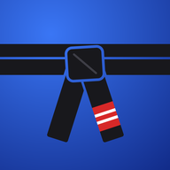

Temporizador ADCC y duración de los combates
Tres rounds de 10 minutos con 2 minutos de descanso: cada uno dura lo que un combate de ronda clasificatoria del Campeonato Mundial de ADCC. Más abajo están los tiempos de combate de ADCC para el Mundial y los Trials.
- Rounds
- 3
- Duración del round
- 10:00
- Descanso
- 2:00
- TOTAL
- 34:10
JIU-JITSU BRASILEÑO
BJJ Timer
PREDEFINIDOS
DURACIÓN · IBJJF ADULTOS
ENTRENAMIENTO
AVISOS
En el navegador, deja esta pestaña abierta y la pantalla encendida. ¿El teléfono en la mochila? La app sigue contando en la pantalla bloqueada.
Duración de los combates ADCC
ADCC usa la misma duración de combate para todos en un evento, y solo hay tiempo extra cuando un combate termina en empate.
| Fase | Combate | Sin puntos | Tiempo extra |
|---|---|---|---|
| Campeonato Mundial, rondas clasificatorias | 10 min | primeros 5 min | 5 min |
| Campeonato Mundial, finales | 20 min | primeros 10 min* | 10 min |
| Trials y Nacionales, rondas clasificatorias | 6 min | primeros 3 min | 3 min |
| Trials y Nacionales, finales | 8 min | primeros 4 min* | 4 min |
* En las finales, los puntos negativos cuentan desde el inicio del combate.
Los ADCC Open locales pueden fijar sus propios tiempos por división, así que revisa la página del evento.
Fuente: Reglas y reglamento de ADCC
Por qué en la primera mitad no hay puntos
En las rondas clasificatorias nada puntúa en la primera mitad del combate, lo que premia buscar la sumisión desde el principio. En la segunda mitad puntúan los derribos, los pases y las posiciones dominantes, y se aplican los puntos negativos.
Cómo entrenarlo
Activa el cambio a mitad: su señal cae justo donde empiezan los puntos, en 5:00 de un round de 10 minutos. Lucha la primera mitad buscando la sumisión y la segunda buscando puntos, tal como se puntúa el combate.
Ajústalo
- Ritmo de Trials: pon el round en 6:00 y la señal cae en 3:00.
- Finales: un round de 20 minutos, con la señal en 10:00.
Preguntas
¿Cuánto dura un combate de ADCC?
10 minutos en las rondas clasificatorias del Campeonato Mundial y 20 minutos en las finales. En los Trials y Nacionales son 6 minutos, con finales de 8 minutos.
¿Hay tiempo extra en ADCC?
Sí, cuando un combate termina en empate: 5 minutos en el Mundial, o 10 en las finales, y 3 minutos en los Trials, o 4 en las finales. Si sigue el empate, deciden los árbitros.
¿En qué se diferencian los tiempos de ADCC de los de la IBJJF?
En la IBJJF la duración del combate depende del cinturón y la edad, de 5 a 10 minutos en adultos, sin tiempo extra. ADCC usa una sola duración de combate por evento y añade tiempo extra en caso de empate.
Más temporizadores de BJJ
Cada uno se abre con los rounds ya configurados.
- 5:00 – 10:00Duración de combate IBJJFDuración del combate para cada cinturón y división de edad, con un temporizador de combate.
- 5 × 5:00 · 1:00Rounds de 5 minutosEl bloque de luchas de la clase: 5 rounds de 5:00 con 1:00 de descanso.
- 8 × 6:00 · 1:00Open matUn solo reloj para todo el tatami: 8 rounds de 6:00 con 1:00 de descanso.
- 8 × 3:00 · 0:20Sparring posicionalRounds cortos con resistencia real desde una posición: 8 rounds de 3:00, 0:20 de descanso.
- 10 × 2:00 · 0:15DrillsRepeticiones por tiempo con señal de cambio: 10 rounds de 2:00, 0:15 de descanso.
- 10 × 1:00 · sin descansoShark tankUn compañero fresco con cada campana: 10 rounds de 1:00, sin descanso.

Entrena con BJJ Timer
Gratis durante 10 días, después una compra única. Tus rounds en la pantalla bloqueada.